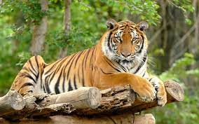

The Bengal tiger, also known as the Royal Bengal tiger,[3] is a tiger from a specific population of the Panthera tigris tigris subspecies that is native to the Indian subcontinent.[4] It is threatened by poaching, loss, and fragmentation of habitat, and was estimated at comprising fewer than 2,500 wild individuals by 2011. None of the Tiger Conservation Landscapes within its range is considered large enough to support an effective population of more than 250 adult individuals.[1] India's tiger population was estimated at 2,603–3,346 individuals by 2018.[5] Around 300–500 tigers are estimated in Bangladesh, 220–274 tigers in Nepal and 103 tigers in Bhutan.[1][6][7]
The tiger is estimated to be present in the Indian subcontinent since the Late Pleistocene, for about 12,000 to 16,500 years.[8][9][10]
The Bengal tiger ranks among the biggest wild cats alive today.[2][11] It is considered to belong to the world's charismatic megafauna.[12] |
 |